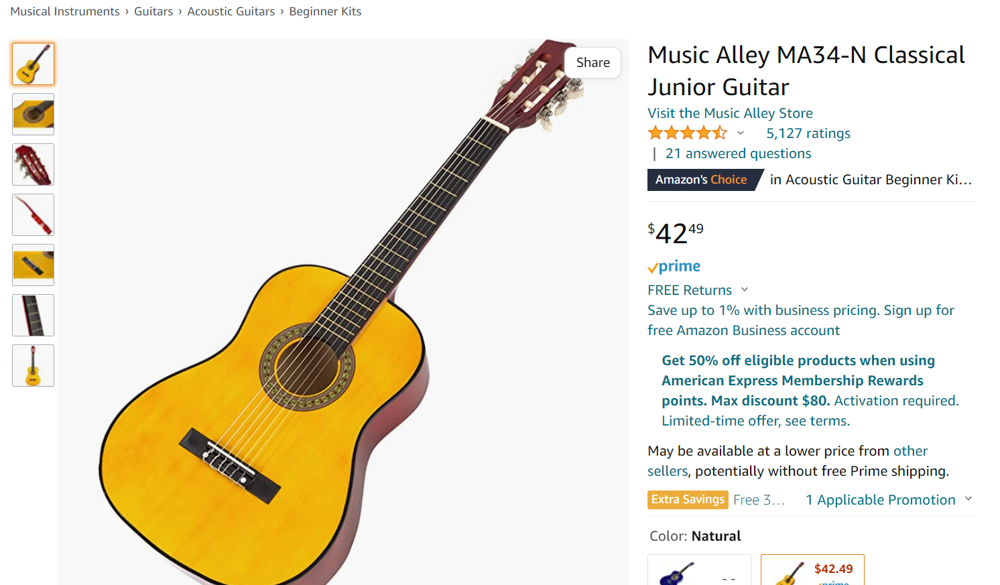

Some Things that I Wish I Knew Before I Started Teaching Myself how to Play Guitar
Advice I wish people told me, and some resources I wish I knew were available:
#1: Learn the Beginner Chords First
My first piece of advice is to learn the beginner chords first.
They provide a good starting point and sturdy foundation that will help you down the road.
You will see that the beginner chords make up a majority of the first songs that you will learn,
so learning them early on will help you a lot.
#2: Practice Everyday
Practicing everyday is crucial to progressing. Just like everything, practice makes perfect.
If you try to progress by only playing once a week, you will find it very frustrating.
A way that I remember to at least pick up my guitar is by never putting it away and always making sure that it is visible in my room.
If I ever need a quick break from studying, I will play a song or two then get back to work.
#3: Learn Songs That you Actually Want to Learn
From personal experience, I found that I am a lot more likely to finish learning a song that I like and am excited about the idea of playing.
It is a lot more effort to practice a song that you do not really like the sound of.
It also helps knowing how the song is supposed to sound, so you are familiar with the rhythm and can match the tune.
#4: Start with a Cheap Guitar

I would also definitely recommend starting with a cheap guitar, until you know for certain that this is something you want to pursue.
I started with my uncle's old guitar and I learned how to tune it from a free app.
If you do not have a guitar lying around, there are very cheap alternatives for as low as $40 online.
I would recommend using this option for about 6 months (I used mine for a little less than a year) until you feel confident that this is something you wish to pursue.
#5: Last but Not Least...Do Not Quit

If you are not where you want to be, look back and see how much progress you have made.
There were many times that I wanted to quit because I felt like I was not improving at all -
but then I would look at old videos and realize how much improvements I made.
When I felt frustrated learning a new skill, I would spend some time going back and playing things I had memorized.
From my experience, there is about a 6 month struggle where your fingers hurt a lot, you are quite confused and you feel like giving up.
Once you get over that hurdle and learn your first few skills, things quickly fall into place.